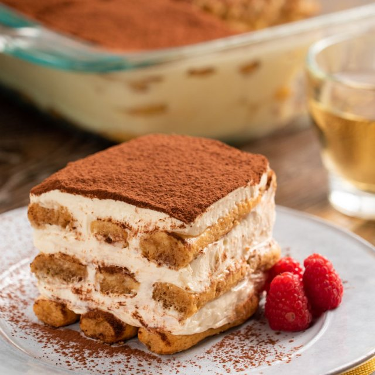

Welcome to JWD Eatery our Italian restaurant where everything is $12! Our classic menu will bring a bite of Italy right to you from our Gustosa Pasta to our delizioso wine. Come have a bella pasto with us at JWD Eatery.
Appetizers
| Description | Price | ||||||||||||||||||||||||||
|---|---|---|---|---|---|---|---|---|---|---|---|---|---|---|---|---|---|---|---|---|---|---|---|---|---|---|---|
| Calamari | $12 | ||||||||||||||||||||||||||
| Squid is eaten in many cuisines; in English, the culinary name calamari is often used for squid dishes. There are many ways to prepare and cook squid. | |||||||||||||||||||||||||||
| Antipasto-Platter | $12 | ||||||||||||||||||||||||||
| Antipasto salad is known to be from Italy. It is a traditional Italian salad that is served as the first course during a meal. Most often an antipasto salads ingredients are slices of meat, various vegetables, olives, mushrooms tossed in a light oil or vinegar dressing. | |||||||||||||||||||||||||||
| Mozzerella Sticks | $12 | ||||||||||||||||||||||||||
| Mozzarella sticks are elongated pieces of battered or breaded mozzarella, usually served as hors d'oeuvre. | |||||||||||||||||||||||||||


Entrees
| Entrees | Price | |||
|---|---|---|---|---|
| Lasagna | $14 | |||
| Lasagna is a wide, flat sheet of pasta. Lasagna can refer to either the type of noodle or to the typical lasagna dish which is a dish made with several layers of lasagna sheets with sauce and other ingredients, such as meats and cheese, in between the lasagna noodles. | ||||
 |
Spaghetti and Meatballs | $12 | ||
| Spaghetti and meatballs combines the holy trinity of beloved ingredients: spaghetti, meatballs and tomato sauce. This family staple and widely enjoyed dish is absolutely delicious. | ||||
 |
Chicken Parmigiana | $12 | ||
| Chicken parmigiana, or chicken parmesan, is a dish that consists of breaded chicken breast covered in tomato sauce and mozzarella, parmesan, or provolone cheese. A quantity of ham or bacon is sometimes added. The dish originated from 20th-century Italian diaspora | ||||
Desserts
| Desserts | Price | ||||
|---|---|---|---|---|---|
|  | Tiramisu | $12 | |||
| Tiramisu is a coffee-flavoured Italian dessert. It is made of ladyfingers dipped in coffee, layered with a whipped mixture of eggs, sugar, and mascarpone cheese, flavoured with cocoa. | |||||
Drinks
| Drinks | $10 | ||||
|---|---|---|---|---|---|
| g | Wine List | $18 | |||
| Merlot. ... | |||||